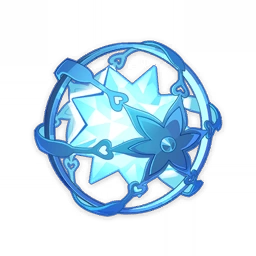
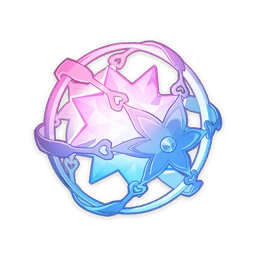

Genshin Impact Gacha Rate
Why I write this post
Genshin is a gacha game where you obtain characters and weapons through a gacha system. However, when I played the game, I was too focused on artifact stats rather than the gacha rates for items. Because of that, I had some misunderstandings and even conflicts with the game's community. I feel like I haven't truly been a gacha player, as I didn't even take the time to understand its basic mechanics. So this post is written for myself - not Nahida write as usual - not for anyone else - as a way to reflect on my mistakes.
Genshin Gacha System
Introduction
Wishes are the gacha system in Genshin Impact
There are two main types of Wishes: the permanent Standard Wish, Wanderlust Invocation, and limited - time Event Wishes for Characters and Weapons.
Availability
The "Standard Wish," Wanderlust Invocation, is always available and requires Acquaint Fate to wish from it. The Beginners' Wish is available indefinitely until all 20 wishes are made, has a 20% discount on the Acquaint Fate required to wish, and guarantees the player receives Noelle and one other 4- or 5-star character within the 20 wishes.

Limited-time Event Wishes are split into two wishes, one for characters and one for weapons, and as the name implies, they are only available for a limited time. Event Wishes require Intertwined Fates instead of Acquaint Fates.

Character Event Wishes have one promotional 5★ character and three featured 4★ characters. Weapon Event Wishes will have two promotional 5★ weapons and five 4★ featured weapons. Both the promotional 5★ and featured 4★ items will have an increased probability for players to wish them when compared to the basic rates when the guarantees are factored in.
Players can buy either of the Fates for 160 Primogems each in the Wishes menu or through Paimon's Bargains. There are also ingame methods of obtaining Fates; I or Nahida will mention them in another post.
Character Event Wishes
Limited event wishes that have 1 promotional 5★ character and 3 featured 4★ characters.
Rates
| Item | Base Rate | Average Rate (including Pity) |
|---|---|---|
| 5★ Character | 0.6% | 1.6% |
| 4★ Character or Weapon | 5.1% | 13% |
| 3★ Weapon | 94.3% | 85.4% |
Rules
- 4★ drop guarantee : If a player does not obtain any 4★ (or above) item within 9 wishes in a row, the 10th wish is guaranteed to be a 4★ (or higher) item. (On guarantee, the probability of getting a 4★ item is 99.4%, and the probability of getting a 5★ item is 0.6%).
- This counter will reset if the player obtains any 4★ item.
- Featured 4★ character guarantee : Every time a player obtains a 4★ item, there is a 50% chance it will be one of the featured 4★ characters.
- If the 4★ item obtained is not one of the featured characters, then the next 4★ item obtained is guaranteed to be one of the featured characters.
- Thus it requires a maximum of 20 wishes to obtain one of the featured 4★ characters.
- 5★ drop guarantee : If a player does not obtain any 5★ item after 89 wishes, the 90th wish is guaranteed to be a 5★ item. (On average, a greater proportion of 5★ items are dropped between 74 and 90 pity).
- This counter will reset if the player obtains any 5★ item.
- Character Event Wishes do not contain 5★ weapons in their item pool, as such each 5★ drop will be a character.
- Promotional 5★ character guarantee : Every time a player obtains a 5★ item, there is a 50% chance it will be the promotional 5★ characters.
- If the 5★ item obtained is not the promotional character, the next 5★ item is guaranteed to be the promotional character.
- Thus it requires a maximum of 180 wishes to guarantee obtaining the promotional 5★ character..
- Counter and Guarantee carry-over : Each wish of the same type shares the above counters and guarantees, this means that the counters for the current Character Event Wish are carried over to the next Character Event Wish (but not the Weapon Event Wish or Wanderlust Invocation).
- For example, if one wishes 89 3/4★ items on Character Event Wish A, then the first wish on the following promotional Character Event Wish B will be a guaranteed 5-star character.
- Likewise if one wished a non-promotional 5-star character on Character Event Wish A, then the next 5-star character on Character Event Wish B will be guaranteed to be the promotional character.
Capturing Radiance
- When the player pulls on "Character Event Wish" or "Character Event Wish-2," if a 5-star character is won but it is not guaranteed to be the promotional 5-star character during this event wish, there is a chance of triggering the "Capturing Radiance" mechanic.
- After "Capturing Radiance" is triggered, the 5-star character won in this event wish will be the promotional 5-star character.
- ncluding the possibility of triggering "Capturing Radiance," when winning a 5-star character in the event wish, there is a consolidated probability of 55% it will be the promotional character.
- It doesn't affect the guarantees. The "Capturing Radiance" mechanic only triggers in cases where the "50/50" (i.e., not guaranteed to win the promotional 5-star character) applies. In simple terms, it increases the chance of directly obtaining the promotional 5-star character from a "50/50."
- The base probability of triggering "Capturing Radiance" is 0.018%.
- If the promotional 5-star character is the second 5-star character obtained on three consecutive occasions, then "Capturing Radiance" mechanic is guaranteed to be triggered when the next 5-star character is obtained.
Weapon Event Wishes
Limited event wishes that have 2 promotional 5★ weapons and 5 featured 4★ weapons.
Rates
| Item | Base Rate | Average Rate (including Pity) |
|---|---|---|
| 5★ Weapon | 0.7% | 1.85% |
| 4★ Character or Weapon | 6% | 14.5% |
| 3★ Weapon | 93.3% | 83.65% |
Rules
- 4★ drop guarantee : If a player does not obtain any 4★ or above item after 9 wishes, then the 10th wish is guaranteed to be a 4★ or higher item. (On guarantee, the probability of getting a 4★ item is 99.3%, and the probability of getting a 5★ item is 0.7%).
- This counter will reset if the player wishes any 4★ or above item.
- Featured 4★ weapon guarantee : Every time a player wins a 4★ item, there is a 75% chance it will be one of the featured 4-star weapons.
- f the 4-star item won is not one of the featured weapons, the next 4-star item won is guaranteed to be one of the featured weapons.
- Thus it requires a maximum of 20 wishes to obtain one of the featured 4★ weapon.
- 5★ drop guarantee : If a player does not win a 5★ item 79 wishes in a row, the 80th wish is guaranteed to be a 5★ item. (On average, a greater proportion of 5★ items are dropped between 64 and 78 pity).
- This counter will reset if the player wishes any 5★ item.
- Promotional 5★ weapon guarantee : Every time a player wins a 5★ item, there is a 75% chance it will be a promotional 5★ weapon.
- If the 5★ item won is not one of the promotional weapons, the next 5★ item is guaranteed to be a promotional weapon.
- Thus it requires a maximum of 160 wishes to guarantee obtaining one of the promotional 5★ weapons.
- Promotional weapon wishes do not contain 5★ characters in their item pool, as such each 5★ drop will be a weapon.
- Counter and Guarantee carry-over : Each wish of the same type shares the above counters and guarantees, this means that your counters for the current Weapon Event Wish are carried over to the next Weapon Event Wish (but not the Character Event Wish or the Standard Wish).
- The weapon selection can be changed or canceled. This will reset your accumulated Fate Points.
- For example, if one wishes 79 3/4★ items on Weapon Event Wish A, then the first wish on the following Weapon Event Wish B will be a guaranteed 5-star weapon.
- Likewise if one wished a non-promotional 5-star weapon on Weapon Event Wish A, then the next 5-star weapon on Weapon Event Wish B will be guaranteed to be a promotional weapon.
Epitomized Path
- Once the player has charted a course towards their chosen weapon, they will obtain 1 Fate Point upon receiving a 5-star weapon that is not the one that they chose.
- Once 1 Fate Point has been accumulated, the next 5-star weapon will be the one chosen through "Epitomized Path."
- The number of Fate Points will be reset upon obtaining an "Epitomized Path" weapon during the current "Epitome Invocation."
- If a weapon is not chosen, wishes will not accumulate Fate Points.
- The weapon selection can be changed or canceled. This will reset your accumulated Fate Points.
- When the current "Epitome Invocation" ends, the number of accumulated Fate Points will also be reset.
- Therefore, an upper limit of 160 wishes (25,600 Primogems) may be required on one Epitome Invocation wish to guarantee the desired 5-star weapon.
Chronicle Wishes
Limited event wishes that allow the player to select a 5-star character or weapon from a list of 5-star items.
Rates
| Item | Base Rate | Average Rate (including Pity) |
|---|---|---|
| 5★ Character | 0.6% | 1.6% |
| 4★ Character or Weapon | 5.1% | 13% |
| 3★ Weapon | 94.3% | 85.4% |
Rules
- Wishes for "Chronicled Wish" require Intertwined Fates. Before wishing, the player must choose their "Chronicled Path" by selecting a 5★ character or weapon from the list of 5★ items.
- If the Designated Item is a character, the 5★ items obtained in the Wish will all be characters.
- If the Designated Item is a weapon, the 5★ items obtained in the Wish will all be weapons.
- There are guarantees for both the 5★ and 4★ items in the Wish. A maximum of 90 wishes conducted will secure a 5★ item through the guarantee.
- When a 5★ item obtained in this Event Wish, there is a 50.000% chance it will be the Designated Item.
- The player is guaranteed to win a 4★ or above item at least once every 10 attempts.
- The wish guarantee count will continue to accumulate within "Chronicled Wish," and will carry over to the next "Chronicled Wish."
- The wish guarantee count for "Chronicled Wish" is independent of the guarantee counts for other types of Wishes.
- The items in each different "Chronicled Wish" period may change. For details, please stay tuned for "Chronicled Wish" event notices.
- Only event exclusive 5★ characters that have already appeared in the "Character Event Wish" or "Character Event Wish-2" at least 2 times and have also not appeared in any recent Event Wishes will appear in "Chronicled Wish."
- Event exclusive 5★ characters that have already appeared in "Chronicled Wish" may still appear in future "Chronicled Wishes" or other types of Event Wishes.
- "Chronicled Wish" events will be available from time to time. Please stay tuned to the official news for detailed information about when they will be available.
Chronicle Path
- After choosing a 5★ item as the Designated Item, if a 5★ item obtained was not their Designated Item, 1 Fate Point will received.
- Once the player has reached the maximum amount of Fate Points (1 Fate Point), the next 5★ item they obtain through this Wish is guaranteed to be their Designated Item.
- Obtaining the current Designated Item or changing the choice will reset the Fate Points to 0.
- Fate Points will not be carried over to the next "Chronicled Wish." Fate Points will be reset to 0 when the current "Chronicled Wish" ends.
Trivia
- The 1.6% consolidated rate, with guarantees on the Event Character wish is equivalent to one 5★ character per 62.5 wishes, or exactly 10,000 Primogems.
- The expected quality (computed from average rates) is 3.162★ for the character banner and 3.182★ for the weapon banner. This means, that with infinitely many pulls, it is expected on average to get a 3.162★ item on the character banner and a 3.182★ item on the weapon banner.
- Because the 50:50 guarantee on Character Event Wishes only applies to the featured character, the actual average percentage of featured characters from 5★ drops is 66.6% or two thirds overall.
Last words
As I mentioned earlier, my lack of understanding led to statements that may have upset others. That's why I'm leaving this post here as a reminder to myself - something I can reread and reflect on to better understand the game's mechanics. If anyone happens to come across this post, thank you for taking the time to read it.
Nahida and I will also be doing a small data analysis on Genshin's gacha system in the near future. Stay tuned!